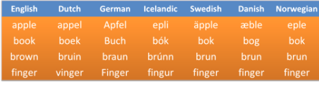
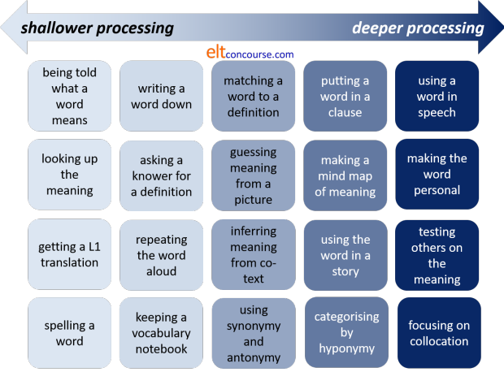
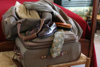

Teaching, remembering and using lexis
You'd be wise to work through the guide to lexical relationships before you follow this guide but if concepts such as synonymy, antonymy, hyponymy, metonymy and so on are familiar to you, read on.
 |
Other languages |
Much is made of things like false friends and the fact that your learners' first languages may interfere with their ability to acquire lexis in English. To an extent, that is true. For learners with an Indo-European language spoken in Europe or ex-European colonies in other continents (i.e., excluding the Indo-Iranian branch), however, there are many more true friends than false.
Cognate words

Words which have a common origin and, therefore, look, sound and mean
alike are called cognates (from the Latin cognatus (blood
relation)).
True and false friends are often cognate words. For example, the English word
night has cognates in French (nuit), German (Nacht), Dutch
(nacht), Swedish (nat), Polish (noc), Spanish (noche) and so on
and these are all true friends because meaning is unchanged but the form
is recognisably related and that makes the items easy to learn.
 |
True friends |
Briefly, the list of languages with many true friends will include:
- The Romance languages: French, Spanish, Portuguese, Italian,
Romanian etc.
There are many words, especially those of Latin, Greek or Norman-French origin which will be recognisable in English to speakers of these languages. These particularly occur in technical and 'intellectual' areas but also include large numbers of very common words.
Speakers of these languages sometimes show a tendency to select familiar, cognate words rather than the more stylistically appropriate English words so we get
I entered the house and extinguished the fire
instead of
I went in and put the fire out
which is also neatly avoiding the phrasal verb, of course. - Germanic languages fall into two categories with similar
vocabularies (and much else). North Germanic or Scandinavian
languages and West Germanic languages which include English
(allegedly – there are those who prefer to call it a North Germanic
language), Dutch
and German as well as a host of small dialects and languages.
There are many thousands of cognate words across these languages. Many of these words refer to some of the most basic concepts such as land, day, hand, old, young, many, good, glass, gold etc. The languages also share scientific and 'scholarly' terms. - Slavic languages exhibit far fewer recognisable cognate words (although there are, in fact, very many hidden by orthographic and phonological changes over the centuries). Recognisable words in English for speakers of these languages will mainly be scientific and scholarly terms of the sort shared by other European languages. These languages are also rich in borrowings from English.
Other languages (i.e., most of them) will not exhibit any significant overlap in lexemes. The implication is clear: learners from most language backgrounds will encounter significantly more difficulty acquiring English words than their more fortunate European colleagues. They will need more time, more recycling and more patience.
 |
False friends |
This is not the place to list false friends for all the languages in the world. There are numerous websites that will do that for specific languages. Another good source is The Cambridge International Dictionary of English.
It is, however, worth noting that false friends come in a range of
falseness. Many are only false friends in certain circumstances.
This includes words which are restricted to some contexts in certain
languages, e.g., angst in English is borrowed from the German
word meaning anxiety but only used in psychological senses.
It is often noted, for example, that the English word sensitive
is problematic for speakers of many European languages because of
confusion with a word similar to sensible in those languages.
However, sensibility is
used in English in the same way and refers to sensitivity of feeling.
That's how Jane Austen used it, incidentally.
The English sensibility is rendered in German as
Sensibilität but the English word sensitive may be
translated as sensibel. For example, the two words
sensitive and sensibility are translated in French as
sensible and sensibilité, in Spanish as sensible
and sensibilidad and in Italian as sensibile and
sensibilità.
There is a separate guide to
cognates and false friends on this site, linked at the end of this guide.
There are also some exercises on this site concerning false friends in the
section for learners.
Click here to go there.
Storing and remembering words |
You are going to see three sets of pictures. For each, write
down a one-word description.
Click when you are ready.


What did you have? Something like
buildings, plants
flowers
(garden) tools / implements
is a good guess unless you
were deliberately quirky.
The reason nearly all people use the same categories is that this is how
we organise the universe – by use (buildings), by
appearance (plants / flowers) and by place
(garden stuff). If this is true, it seems logical to teach sets of
words in ways which cater for these sorts of categorisation. Now
is not the place to tell you how to do this but you need to bear it in
mind when planning to insert new lexis into lessons.
How are my learners going to remember the words?
Aids to memory |
Now you are going to look at some words and try to remember them. Here's what to do:
- Show the words by clicking on the open eye symbol:

- Look at the words for no more than 10 seconds
- Click on the closed eye symbol and try to write as many as you can remember.
OK? Here's Set 1
Click when ready:

sespink, dunkannage, winjeris, floosbendy, dramscumm, fint, plib, strint, flasmond
Click after 10 seconds and write the words.
Set 2

scuttlebutt, globe, computer, finalise, settee, folding, sarong, hoe, junket
Set 3

beret, bowler, topper, panama, cloth cap, fedora, fez, pork pie, trilby
Set 4

I disembarked at about 4 and took a carriage into town where I purchased a new tutu and a wig.
In theory, this task should have been
getting easier as you went along. Why should that be?
Set 1 contained nonsense words and they are harder
to remember because you have no meaning to attach to them.
Moral: we all need meaning to help us recall words. This is
what your students have to do if you don't make meaning clear.
Set 2 contained real words but with no meaning
connections between them.
Moral: disconnected words are difficult to remember.
Set 3 contained a set of hyponyms for hat.
Moral: words connected to each other because they fall in the same
set are easier to recall.
Set 4 was a short narrative with lexis embedded in
it.
Moral: words which appear in some kind of narrative are easy to
recall because of the context and we can visualise what happened.
General moral: CONNECT and CONTEXTUALISE.
 |
What does it mean to know a word? |
That sounds an easy question but, apart from the simple denotational
meaning of a word, what else do we need to know about it to be sure
that we can deploy it accurately?
You have probably already thought of any connotation the word may
have in certain cultures and for certain people. What else?
When you have made some notes, click to
compare your list with
this one.
- We need to know what a word means – what it denotes and what it
connotes (if appropriate).
There is a good deal of difference between pig-headed and determined although they denote much the same characteristic. - We need to know how it is connected to other words which mean
similar things (e.g., buy, purchase, bargain, discount etc.).
The words get and acquire are synonymous in many cases but obviously not in all, for example. - We need to know what words it commonly goes with (collocation) so we know we can't have a high tree but prefer tall as the adjective, for example.
- We need to know what other meanings it can have (e.g., shop,
bank etc. can have different meanings and fall into different
word classes: nouns and verbs here).
Most words in English are polysemous, having slightly different but connected meanings. We may know, for example, the meaning of ceiling when applied to a room in a building but may not realise what its use is in a term such as an aircraft's ceiling or a glass ceiling in a working environment. - We need to know how the word changes depending on its grammar (e.g., shop, shops, shopping, shopped etc.). Orthography and pronunciation have a role here, too.
- We need to know what grammar the word uses (e.g., does it take a direct object, an indirect object, both, a preposition, does it have an odd plural or an irregularity? etc.). In other words, we need to know about its colligational characteristics. For example, the words hide and conceal mean much the same in many circumstances but only hide can be used intransitively.
- We need to know how to pronounce the word. This also applies to derived forms so we need to realise the changes that occur, for example, in making a verb from a noun or a noun from an adjective and so on. There are significant differences, for example between photograph and photographer and between contract (verb) and contract (noun).
- We need to know how to spell the word.
- We need to know what kind of situations the word is used in and who might use it. Is it, for example, typical of a certain register or stylistically affected?
We might not choose, of course, to cover all this ground with every
word we introduce but we need to consider all these things when planning
to focus on lexis in any lesson.
Typically, a word's denotation is the first step but the other aspects
of its use need to be mastered before a learner can truly be said to
know a word.
 |
Semantic space |
In addition to the nine points above, learners also need to grasp
what is known as a word's semantic space. This concerns what
prototypical features of a word determine the limits of its use.
Children, learning their first language, often make errors in this
regard, calling, for example, all four-legged creatures horses
or all adults apart from mother and father, uncle and so
on. Quite rapidly, children learn to identify the prototypical
features of lexemes and limit their use to within conventional,
culturally determined boundaries. This goes on through life
and most native speakers are frequently faced with uses of words
outside the fields in which they have previously been encountered.
Unfortunately, semantic space varies across languages and adults
already have a set of prototypical features which they employ
frequently to distinguish, for example between a cup and a
glass (using ideas such as with or without a handle,
transparent or opaque, porcelain or not etc.).
For example, in German, the word vegetable does not include
the term potato and in Swedish, the word wood for
the material and for a small group of trees is not the same although
it is, for example, in French.
Applying the conventional prototypical features that one has
acquired with one's first language to a second is, therefore, often
perilous.
Moreover, determining the boundaries of closely connected words such
as railing and fence, shade and
shadow, job and career, position and
post and so on is difficult and requires repeated exposure
to the lexemes in context. Even native speakers may disagree
about the determining features which distinguish a tree
from a shrub or a leaflet from a tract,
for example, and the distinguishing features of such terms are very
unlikely to be parallelled in the learners' first language(s).
This is not a phenomenon confined to nouns and the distinctions
between stroll, saunter and wander and chilly,
cool and fresh are not immediately apparent from
context.
The core meanings of railing and fence are
virtually identical (involving concepts of a barrier delineating
spaces) so only secondary features (such as the materials from which
it is made, the purposes to which it is put and its design), which
may not always be present, can be used to disambiguate.
Hunting the internet for images of either will often throw up the
same images in different categories.
For more in this area, see the guide to semantics, linked below.
 |
Choosing what lexis to teach |
When you are deciding what to teach in terms of lexis, what factors
do you take into account?
Make a list and click
here.
- FREQUENCY – HOW OFTEN DOES IT OCCUR?
- Who decides if a lexeme is frequent? Use your intuition and/or consult an online corpus. Do your learners need words occurring frequently in a particular register? If so, then a corpus search for frequency might not help much.
- RANGE – OVER WHAT RANGE OF CONTEXTS CAN IT BE USED?
- If a word is only used in very informal or formal contexts, do your students really need it?
- COVERAGE – HOW MANY THINGS CAN IT APPLY TO?
- Clearly a common superordinate or hypernym such as vehicle can be very useful if a learner doesn't know items such as tram, minibus, coach etc.
- USEFULNESS – to your learners
- If your learners need words occurring frequently in a particular register or setting, you need to prioritise them. The lexeme Maltese is neither frequent nor very useful (unless, of course, you happen to come from / live in / want to visit Malta).
- TEACHABILITY / LEARNABILITY
- How easy is it for your learners? Is there an acceptable alternative that is easier for them? Are there grammatical issues with the word above your learners' level?
Active vs. passive knowledge |
The distinction between active and passive vocabulary use is one
that is probably familiar to most of us in our first languages.
In English, for example, a word such as nomenclature is
probably known to most speakers of the language but few will have
the need, the ability, the confidence or the will to use the word actively in everyday speech.
Many people would be able to assert that the word has something to
do with naming things but few would be able to provide a succinct
and accurate definition (i.e., that it refers to the body or system
of names used in a particular specialist field). The reason is
simple: most people do not need to use the word so precisely and
will have little difficulty understanding it in context. Most
users of the language do not need, either, to see the word as also
meaning the act of devising a system of naming or, indeed, the
procedure for doing so but both these extra meanings are in a
dictionary definition of the lexeme.
As Pooh has notably pointed out:
For I am a bear of
very little brain, and long words bother me.
AA Milne (1926), Winnie the Pooh
Learners
of a language have traditionally been held to have larger passive
vocabularies than is optimum for communication so a good deal of
effort and thought has gone into ways to make passive vocabulary
active.
However, in common with many dichotomies in the field, this one between active and passive use may be too simplistic and unsustainable. There are three views, in essence:
- Passive and active vocabulary are distinguishable by whether a learner can use a word orally and in writing or simply understand it when it is seen in its written form.
- Passive and active vocabulary exists on a cline from understanding a lexeme in a familiar context when seen through to complete mastery of its form, use, grammar, pronunciation and orthography. This means, for example that at various stages in the trek to full mastery, a learner may be able to recognise a word in written contexts, spell it successfully, pronounce it acceptably and (usually later) recognise it when it is heard. Later, the learner may become aware of any of the word's metaphorical uses, its connection to other words in the same field of meaning, any cultural connotations the word may have and so on. Finally, the word becomes embedded in the learner's personal lexicon and is used at will with very little thought and delay in retrieving it from memory. In other words, the learner has achieved native-speaker-like mastery of the item.
- A lexeme exists as part of a learner's passive vocabulary until enough about it has been acquired for it to make the qualitative leap from passive to active use. Where exactly that point is is not clear but, anecdotally, learners will often point to a time at which the item became so familiar that they quite suddenly began to use it easily and without a great deal of searching and effort.
The view taken here is that the second definition makes the most sense for the practicalities of classroom use because the focus can be on extending learners along the cline from wholly passive to masterfully active use of a lexeme in stages rather than making an effort to leap directly from wholly unknown to full usable lexemes. The third view is compatible with that, of course, because the aim is precisely to reach the point of take-off from passive to active use. The view is, however, not compatible with the first assumption.
The other issue with the dichotomy concerns the assumption, often
made, rarely shown to be true, that learners' passive vocabularies
always exceed their active ones. While this is intuitively the
case, it may not be as clear cut as it seems. It can be the
case, for example, that a learner can use a word in one sense
actively and with little effort at retrieval but may be confused by
the same item when it appears in a different setting and is used
with a slightly different meaning or used figuratively. So,
for example, while the verb in:
I packed my suitcase
may be readily used and understood, the same verb in:
The theatre was packed
may constitute an unknown blocking item in a text.
 |
Processing depth |
The assumption, and it is often just that, is that the greater the depth of processing that is asked of learners, the more secure will be their understanding of a lexeme and the more likely it is that they will be able to use it in their production (i.e., make it an active item) rather than simply understand it when the hear or see it (i.e., leave it as a passive item).
A good deal of research has been done on the ways in which new
words are understood and learned. Mostly, the research has
focused on cognitive processing phenomena and revolves around the
concept of depth of processing. The concern is to discover
what depth of processing and what cognitive effort is involved in
moving a word from passive understanding to active use.
Thornbury (2002:25) puts it like this:
The more decisions the learner makes about a word, and the more cognitively demanding these decisions, the better the word is remembered.
However, we are not only looking for a word to be well remembered; we are also trying to make sure that a word is available to a learners for active use.
A distinction needs to be made here between incidental and
explicit learning of items.
Incidental learning is the major way in which children acquire the
lexicon of their first languages. It is rare for carers to
provide explicit teaching of any words (although simplification is
often observed).
Explicit learning, on the other hand, involves the deliberate focus
on the meaning, form and use of lexeme.
It should not be assumed that we are only focused on explicit
learning of the lexis. Incidental learning also plays a
classroom role and it has been shown that frequent exposure to an
item even without an explicit focus on meaning and use can often
result in acquisition into passive and
active vocabulary. The spelling and pronunciation of lexemes
are, for example, often acquired incidentally while the main focus
may be on comprehension followed by use.
What is done with a newly encountered item, the theory goes, is
crucial to whether the item is more or less immediately forgotten,
remains as a passively understood lexeme or enters the learners'
active production store.
For example, if one encounters a new item in a reading text, looks
it up in a bilingual dictionary and then moves on, it is unlikely
that the word will be remembered, although it may if the event
happens frequently enough. If, on the other hand, you are
required to use a word to say something personal and important about
yourself and communicate the thought to others, the word will
probably have a much greater chance of remaining in your active
vocabulary.
Again, annoyingly, it is difficult to identify activities and tasks
which are easily consigned to one category or another because depth
is, of course, a relative phenomenon. A deep puddle is rather
less deep than a deep chasm.
When we look at activity types, then, we can place them on a cline,
like this:

Diagrams like that one are helpful as an aide memoire
but do not tell the whole story. Much depends on how the
techniques are used.
People also think and learn differently so a technique that works
for one learner may not be effective for another.
 |
Recycling |
If it is true that vocabulary expands incrementally beginning
with recognition and passing through stages at which an item becomes
more and more familiar and more is known about it, including word
class, spelling, pronunciation, collocational characteristics and so
on, then there is a clear case to be made for recycling vocabulary
frequently.
Some have claimed that a new word needs to be encountered 6 or 7
times before it can be committed to long-term memory and used at
will. Nation, cited in Schmitt (2000:137) suggests that up to
16 repetitions may be required for a word to be learned. The
nature of the repetitions is, however, not described.
The most obvious implication for teachers is that the introduction
of a new item should not be a one-off event that is then forgotten
about because the item itself will be almost instantly forgotten.
What this does not mean, naturally, is that repetition of the same
event is effective. Simply writing a word seven times in a
notebook may be an effective way of learning its spelling
(especially if it is very irregular) but adds nothing at all to the
learner's ability to use the word and does nothing to increase the
sophistication of the learner's understanding of the item's
characteristics.
When a word is first encountered, it may be enough for it to be addressed quite shallowly with reference only to its meaning (via translation in some circumstances) and its word class. A rule-of-thumb procedure for the nature of the recycling events might look something like:
- Inferring the items' denotational meaning via co-text, visual stimuli, L1 cognates or the use of reference texts. Noting word class.
- Encountering the item in a memorable context: songs, poems, stories, relevant texts etc.
- Searching for synonyms, co-hyponyms, constructing paraphrases, matching exercises, comparing ideas with the teacher and colleagues.
- Pronouncing the item acceptably and spelling it correctly.
- Pronouncing and spelling derivatives and stems. Considering affixation, conversion (word class) and compounding. Using a mind map and identifying derived words or stems, categorising the item with others in the same word family or lexical set.
- Word grammar analysis.
- Identifying the items' connotations (if any) and figurative or metaphorical uses (if any).
- Categorisation exercises with other known items incorporating the new item(s). Transferring the item's meaning to a visual or physical representation.
- Connecting a word with personal experiences and relating them to others. Using the word in simulated or real communicative events.
- Revising the word at a later stage and constructing tests for others.
Things do not need to happen precisely in that order, of course, and it is unlikely that opportunities to deploy all these procedures will occur in a single lesson (although they might if the target set of items is small enough).
If you prefer a cut-out-and-keep diagram:
 |
Strategies for learning and remembering lexis |
Here are some strategies
commonly used by learners divided into those which may help to
unpack the meaning of unknown items and those which may help to
consolidate learning once the meaning is known.
Some of the following are exemplified in the teaching ideas which
follow.
- Unpacking meaning
Most of these are at the shallow end of the spectrum because they are identification rather than learning approaches to lexis.
- Word class
Identifying word class is a small help to understanding meaning and a greater one in deciding whether it is important to understand the word or not and can be done in two main ways:- By using the co-text:
For example
any word which appears between a determiner and a noun is almost certainly an adjective as in, e.g.:
that horrendous storm
any word which immediately precedes or follows a verb is almost certainly an adverb, e.g.:
she promptly left
etc. - By using word shape and an understanding of affixation and
compounding. For example:
prefixes almost always change a word's meaning, e.g.:
productive → counterproductive
suffixes almost always affect word class but not meaning, e.g.:
courage → courageous
English is right-headed so the right-hand word signifies word class and meaning (usually), e.g.:
a doorman is a type of man not a type of door
a fencepost is a type of post, not a type of fence
only nouns and verbs inflect in English so, e.g.:
an -s or -es ending is either a plural noun or a verb in the third person singular and an -ed ending on a word usually signified a past tense or past participle while -ing signifies a progressive form
- By using the co-text:
- Cognates
Some cognate words are instantly recognisable but others require a little understanding of the patterns. Cognate words between languages often follow simple rules so a final 'd' in German is often a final 'th' in English and the ending- ion in English will usually be -zione in Italian and -ção in Portuguese. - Using pictures and other graphics helps to:
- Recognise the register of a text and predict the kinds of lexis that it will contain
- Recognise how words such as, e.g., pass, score and goal are being used
- Gaining an understanding of gist by skimming a text helps to get a sense of the author's purpose and likely meanings so one is able to predict whether, e.g., adjectives are likely to be positive (as, in an advertisement, for example) or negative (as in an argument against something, for example).
- Word class
- Consolidating learning
Many of the techniques and activities to the right of the diagram above fall into consolidation strategies.

- Personalising words to connect them to one's own
experience. A learner may, for example, understand the
word delightful but until they can apply it to something
they personal found delightful, it may remain as a passive
item with a rather distant meaning for them.
Affective factors play a role here, too. Some words are simply more appealing to some learners, either because they connect them with pleasant memories or because they simply like the sound and shape of a word. - Using hyponymy and meronymy helps to fix words in terms of meaning so knowing, e.g., that both buses and cars are type of vehicles and that they both have steering wheels, tyres, windscreens and so on creates a web of associations.
- Using antonymy and synonymy can also help to fix a word's meaning by what it is similar to or not.
- Testing others on meaning and use is a powerful consolidation strategy because it requires the learners to face up to whether they have really understood and can use an item themselves and also requires evaluation of other people's use of the item.
- Focusing on collocation can involve quite deep processing because it requires active use of an item bearing in mind word class, meaning, style and register simultaneously.
- Writing words down is a well-known aid to memory and writing two or more sentences or short clauses to show the word's meaning is even better. Simply writing down a word is not enough.
- Using a word freely in a spoken activity is a powerful aid because it automatically requires the learner to make it active and at the same time focus on meaning, pronunciation and appropriacy.
- Mentally or aloud repeating a word may help to fix it in the memory.
- Organising vocabulary notebooks by categories of meaning rather than word class or spelling is effective for some learners.
- Personalising words to connect them to one's own
experience. A learner may, for example, understand the
word delightful but until they can apply it to something
they personal found delightful, it may remain as a passive
item with a rather distant meaning for them.
 |
Some ideas for teaching lexis |
There's nothing earth-shattering here but this may remind you of some techniques and material types to use when the focus is on lexis.
 |
Focus on collocation |
Odd-one out:
| Adjective – Noun | Tall – person,
mountain, tree, wall? Torrential – rain, water, river, downpour, snow? Rain – gentle, heavy, strong, hard, tough? Problem – large, strong, difficult, big, heavy? |
| Verb – Noun | Make / Do – homework, money, a mistake,
an effort? Catch – cold, meaning, idea, bus, lift? Path – wind, turn, twist, coil, spiral, twirl? Wage – pay, earn, settle, gain, give, achieve? |
Word grids. Students work with dictionaries and/or a text to put a X in the right boxes:
| frozen food | your heart | out | relationships | into tears | sugar | ice | chocolate | |
| thaw | X | |||||||
| melt | ||||||||
| dissolve |
Matchers. Students draw the lines and end up with something like this:

Gap fills. Students work together to see what can naturally go in the gaps:
We …………… the …………… path up the mountain until we …………… the summit.
The view was quite …………… and we …………… for over an hour just …………… it.
Selections. Students choose the right collocations:
The tasteless / foul / bright hotel
was in a dirty / unclean / polluted
alley.
The receptionist was so abusive / cruel / spiteful that we felt
undesirable / unwelcome / objectionable from the outset.
Focus on inferring (not guessing) the meaning from context |
In these examples, the assumed unknown word is in red.
| There’s a really noisy bash going on next door. The music is far too loud. |
|
Students work together to decide:
So it must be a kind of gathering. |
| He has an unpleasantly raucous voice. It's like a drill. |
So it must mean unpleasant to listen to. |
| There's a really noisy party taking place next door. |
So it must mean happen. |
| The disco was so deafeningly loud it made my head ache. |
So it must mean extremely loud. |
 |
Focus on lexical field |
- Add to the list
- nurse, doctor, medicine, hospital, ambulance, ward, emergency, ...
- Spot the odd one(s) out
- wet, soaked, humid, drenched, flooded, damp, rainy
- Match the verb to the noun
- builder, nurse, teacher, detective
treat, construct, arrest, prepare - Divide the list into 2 / 3 / 4 etc.
- sweets, sugar, hammers, chocolates, nails, eggs, saws, newspapers, bacon, screwdrivers, glue, paint
 |
Using word clines |
Many words (particularly adjectives) live on a cline between a
minimal use and a more extreme meaning of the concept. For
example, words which describe size may be set on a cline from very
small to very large, like this:

and words which refer to movement can be similarly arranged, like
this, for example:

and those to do with the size of entities can be show as:

You could probably draw similar diagrams to express concepts such
as heat (freezing up to boiling), light (pitch
black up to blinding), wetness (arid up to
inundated), feelings (detest up to adore),
houses (slum up to palace) and so on.
As a quick way of making the relative strengths of words or the
attributes to describe these notions, clines like this are
easy to draw on a whiteboard even if you do not have time
to prepare them beforehand.
However, there are some issues to consider:
- Collocation:
Not all the words will naturally operate in the same relationships. For example:
The mouse ran across the room
but not
*The mouse galloped across the room
and
A minute speck of dust
but not
A minute stone
and both
A pretty village
A pretty hamlet
but not
A pretty city - Connotation:
Some words carry positive or negative senses for most speakers so while:
We ambled down to the pub
implies a pleasant, unhurried movement,
She crawled into the garage
implies an uncomfortably slow manoeuvre.
Equally, infinitesimal implies unimportant in a way that microscopic does not. - Definitions and relativity:
Any two speakers of English are unlikely to agree exactly where on the cline certain words fit and, moreover, many are relative so, for example, while a mouse is tiny in comparison to a horse, it is huge in comparison to a flea.
Nevertheless, dealt with sensibly with due regard to these issues, clines are a useful way to focus on notional categories.
 |
Focus on dealing with lexis in texts |
- Chasing down lexical chains
- Find all the words in the text that describe people
Find all the words connected to medicine
Find three words which tell you he was happy - Provide the definition and get the learners to find the words
- Find a word which means very unhappy
Find a word which means a type of house
 |
Some lighter activities |
- In the manner of
- Prepare cards with instructions such as Open the box
extremely carefully, Open the parcel frantically
Students mime to each other and try to guess the adverb. - Categories
- One student goes in the hot seat and tries to guess the category from the example. E.g., "Things that are hot". Students in the team call out examples of such things: the sun, a cooker, a cigarette, a car's engine, someone with a fever etc. Other examples: "Things that are sold in cans", "Things that are yellow", "Things that break easily".
- Pictures
- One student starts a drawing on the board and the team members guess the word as soon as they can. There are endless variations on this.
| Related guides | |
| lexical relationships | the obvious first place to start with considerations of meaning |
| semantics | for a consideration of theories of meaning |
| noticing | for a guide to how this key learning strategy works and how it may be encouraged |
| cognates and false friends | for the guide to some key ideas concerning lexis across languages |
| language interference and facilitation | for a guide to how first-languages can affect the acquisition of lexis |
| word formation | for the guide to understanding affixation |
| inferencing | for more on how learners may draw inferences |
| tense and aspect | for a link to four guides to analysing tense and aspect beginning with a consideration of meaning |
References:
Campbell, GL, 1995, Concise Compendium of the World's Languages,
London: Routledge
Milne, AA, 1926, Winnie the Pooh, UK: Methuen
Proctor, P (Ed.), 1995, Cambridge International Dictionary
of English, Cambridge: Press Syndicate of the University of
Cambridge
Schmitt, N, 2000, Vocabulary in Language Teaching, Cambridge: Cambridge University
Press
Swan, M and Smith, B (Eds.), 2001, Learner English, 2nd Edition,
Cambridge: Cambridge University Press
Thornbury, S, 2002, How to Teach Vocabulary, Harlow: Longman
Other references
for lexis and vocabulary:
French Allen, V, 1983, Techniques in Teaching Vocabulary,
Oxford: Oxford
University Press
Gairns, R & Redman, S, 1986, Working with Words: A Guide to Teaching
and Learning Vocabulary, Cambridge: Cambridge University Press
Hoey, M, 2006, Lexical Priming: A New Theory of Words and Language,
London: Routledge
Lewis, M, 1997, Implementing the Lexical Approach, Brighton,
UK: Language Teaching
Publications
Lewis, M, 2002, The Lexical Approach, Thomson ELT
Lindstromberg, S & Boers, F, 2008, Teaching Chunks of Language: From
Noticing to Remembering, Helbling Languages
McCarthy, M, 1990, Vocabulary, Oxford: Oxford University Press
Morgan, J & Rinvolucri, M, 1986, Vocabulary, Oxford: Oxford University Press
Nation, ISP, 2001, Learning Vocabulary in Another Language,
Cambridge: Cambridge University Press
Schmitt, N & McCarthy, M, 1997, Vocabulary: Description, Acquisition
and Pedagogy, Cambridge: Cambridge University Press